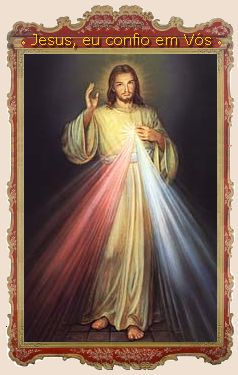
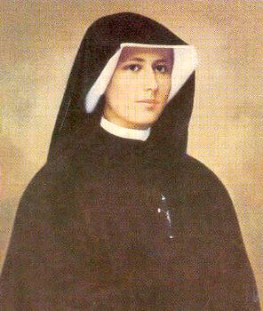
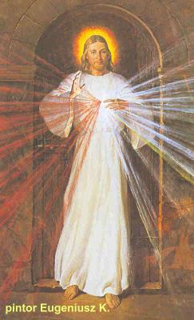
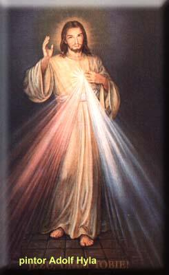

JESUS MISERICORDIOSO
A IMAGEM DO SENHOR
Estando em
Plock, no dia 22 de Fevereiro de 1931, à noite, quando me encontrava na minha
cela, vi NOSSO SENHOR com um vestuário branco. Uma das mãos estava erguida para
dar a bênção, e a outra 
Quando descrevi o fato ao Confessor (provavelmente Padre Adolf ou Padre Ludwik), recebi uma estranha resposta: “Isso diz respeito à tua alma. Certamente o SENHOR mandou você pintar a imagem de DEUS em tua alma”.
Quando saí do confessionário, ainda meio atordoada pela interpretação incorreta do sacerdote, ouvi estas palavras: “A Minha Imagem já está na tua alma. EU desejo que haja a Festa da Misericórdia. Quero que essa Imagem, que pintarás com o pincel, seja benta solenemente no primeiro domingo depois da Páscoa, e esse domingo deve ser a Festa da Misericórdia. Desejo que os sacerdotes anunciem essa Minha grande Misericórdia para com as almas pecadoras. Que o pecador não tenha medo de se aproximar de MIM. As chamas da Misericórdia ME queimam. Quero derramá-las sobre as almas”. (Diário parágrafo 49 – páginas 33 e 34)
Em seguida, JESUS queixou-se com estas palavras: “A falta de confiança das almas ME dilacera as entranhas. Dói-ME ainda mais a desconfiança da alma escolhida. Apesar do Meu Amor inesgotável, não acreditam em MIM, nem mesmo a Minha cruenta morte não lhes é suficiente. A alma que abusa dos presentes Divinos, ganha aflições e angústias”. (Diário parágrafo 50 – página 34)
Quando conversei o assunto com a Madre Superiora (Madre Rosa), sobre o que DEUS estava exigindo de mim, ela me respondeu que JESUS deveria através de algum sinal deixar conhecer mais claramente o que ELE pretendia. (Diário parágrafo 51)
Quando pedi a NOSSO SENHOR algum sinal como prova “de que verdadeiramente foi ELE, meu DEUS e SENHOR Quem fez o pedido”, ouvi interiormente esta voz: “Darei a conhecer aos Superiores (o sinal), por meio das graças que concederei através dessa Imagem”. (Diário parágrafo 51 – página 34)
A Irmã Faustina percebendo que a Superiora também não estava acreditando, foi envolvida por uma abominável angústia, pois viu que naquele ambiente de desconfiança, não encontraria um meio de realizar a Vontade de JESUS, mandando pintar a Imagem DELE.

E agora havia um novo tormento para mim (pensou a Irmã), de não ter um confessor permanente. Imensamente preocupada pedi a JESUS que concedesse as graças (da Divina Misericórdia) à outra pessoa, porque não sei aproveitá-las e apenas as desperdiço. “JESUS, tende misericórdia de mim, não me confieis coisas tão grandes, bem vedes que sou um pozinho incompetente”. Contudo a bondade de JESUS é infinita e ELE me prometeu ajuda visível na Terra. Ajuda que recebi quando (tempos depois) fui para Vilna. Reconheci no Padre Sopocko essa ajuda de DEUS. Conheci-o mesmo antes de chegar a Vilna, através de uma visão interior. (Diário parágrafo 53 – páginas 34 e 35)
Uma vez, quando o Padre Sopocko mandou que eu perguntasse ao SENHOR o significado dos dois raios da Imagem, respondi-lhe: “Muito bem, perguntarei ao SENHOR”.
Durante a oração da tarde na Capela ouvi estas palavras interiormente:“Os dois raios representam o Sangue e a Água: o raio pálido significa a Água, (na simbologia joanina) que justifica as almas (através do Batismo) (representa também o dom do ESPÍRITO SANTO); o raio vermelho significa o Sangue (o Sacrifício da Cruz, o Sangue Redentor da Vítima perfeita e o dom da Santa Eucaristia) que é a vida das almas. Ambos os raios jorraram das entranhas da Minha Misericórdia, quando na Cruz, o Meu CORAÇÃO agonizante foi aberto pela lança (do Centurião Romano) . Estes raios defendem as almas da ira do Meu PAI. Feliz aquele que vive à sua sombra, porque não será atingido pelo braço da Justiça de DEUS. Desejo que o Primeiro Domingo depois da Páscoa seja a Festa da Misericórdia.
Pede ao meu servo fiel (Padre Sopocko) que, nesse dia, fale ao mundo inteiro desta Minha Grande Misericórdia, e que aquele que, nesse dia, se aproximar da Fonte da Vida (estiver em estado de graça ou se confessar, e participar da Santa Missa e receber a Sagrada Eucaristia), alcançará o perdão total das culpas e das penas.
A humanidade não encontrará a paz enquanto não se voltar, com confiança, para a Minha Misericórdia. Como ME fere a incredulidade da alma! Essa alma confessa que sou Santo e Justo e não crê que sou Misericordioso e não acredita na Minha Bondade?
Alegra-se o Meu CORAÇÃO com esse título de Misericordioso. Quer significar que a Misericórdia é o maior atributo de DEUS. Por que todas as obras das Minhas Mãos são coroadas pela Misericórdia. (Diário parágrafo 299/300 – página 110/111)
(O Sacramento
do Batismo e da Reconciliação purificam a alma e a Eucaristia a alimenta
dando-lhe vigor 
Irmã Faustina tentou por diversas vezes desenhar a Imagem de JESUS, mas ela não tinha o dom da pintura e por isso não conseguia. Pediu ajuda as Irmãs e aos Padres Confessores, mas sem qualquer êxito.
O austero regime de vida e os esgotantes jejuns que ela própria se impôs, ainda antes de entrar para a Congregação, de tal maneira enfraqueceram o seu organismo que, já no tempo de Postulante, foi necessário mandá-la para a Casa de Skolimov, perto de Varsóvia, a fim de melhorar a saúde. Depois do primeiro ano de Noviciado vieram as dolorosas experiências místicas, chamada “noite escura” e, a seguir, os sofrimentos espirituais e morais ligados a realização da missão que NOSSO SENHOR lhe tinha confiado. A Irmã ofereceu a sua vida pelos pecadores e por isto mesmo passava por diversos sofrimentos em benefício das almas que estavam no Purgatório e pela conversão dos pecadores.
Em Novembro de 1932 ela foi à Varsóvia para a Terceira Provação (de cinco meses), a que as Irmãs da Congregação são submetidas antes de fazer os Votos Perpétuos, e conforme a Regra, fez também, um Retiro de preparação em Walendow.
Numa noite, veio ter comigo em minha cela, uma das nossas irmãs que tinha morrido há dois meses. Vi esta Irmã num estado terrível, toda em chamas e com o rosto retorcido pelas dores. Isso durou um breve momento e logo desapareceu. Um tremor atravessou a minha alma, porque não sabia onde ela sofria se no Purgatório ou no Inferno, e por isso, dobrei as minhas orações em benefício dela. Na noite seguinte ela veio novamente, mas apareceu num estado mais terrível, em chamas ainda mais intensas, no seu rosto estava estampado o desespero. Fiquei muito admirada dela se apresentar assim, depois das orações que ofereci e então lhe perguntei: “Não lhe ajudaram as minhas orações”? Ela respondeu que em nada ajudaram as minhas orações e nada ajudariam. Perguntei: “As orações que toda a Congregação lhe tinha oferecido, também essas não lhe trouxeram nenhuma ajuda”? Respondeu-me que nenhuma, e acrescentou: “Essas orações beneficiaram outras almas”. Então eu lhe disse: “Se as minhas orações nada ajudaram à Irmã, peço que não volte mais a mim”. E ela desapareceu imediatamente. No entanto, não cessei de rezar por ela e pelas outras almas que padecem no Purgatório. Depois de algum tempo, veio visitar-me novamente à noite, mas num estado bem diferente. Já não estava em chamas, como antes, e o seu rosto estava radiante, os olhos brilhavam de alegria e me disse que eu de fato possuía verdadeiro amor ao próximo, que muitas outras almas tiraram proveito das minhas orações. E me encorajou a continuar e a não deixar de rezar pelas almas que sofrem no Purgatório afirmando que ela não ficaria por muito tempo em purificação. (Diário parágrafo 58 – página 37)
Em Abril de 1933, a Irmã Faustina viajou para Cracóvia, a fim de fazer um Retiro de oito (8) dias de preparação aos Votos Perpétuos. Em 1º de Maio de 1933, em cerimônia presidida pelo Bispo Estanislau Rospond, fez os Votos Perpétuos. No dia 25 de Maio foi transferida para Vilna. Lá ela viu o seu Diretor Espiritual que JESUS tinha escolhido (Padre Michal Sopocko). Descreve a Irmã: “Quando entrei na Capela, ele estava entre o Altar e o Confessionário, da mesma maneira como o tinha visto antes, na visão interior. Então ouvi uma voz na alma”: “Eis a tua ajuda visível na Terra. Ele te ajudará a cumprir a Minha Vontade”. (Diário parágrafo 53 – página 35)
A imagem de JESUS feita por Batowski ficou muito comprometida por que na ocasião da guerra, não utilizaram uma técnica adequada para a sua conservação. Por essa razão, embora tenha sido restaurada, só é mostrada em ocasiões especiais. Assim, objetivando ter uma imagem para uso permanente, Padre Sopocko dirigiu-se ao artista e pintor Eugeniusz Kazimierowski, para pintar outra Imagem do SENHOR conforme as indicações da Irmã Faustina. Esta Imagem foi terminada em Junho de 1934 e colocada no corredor do Convento das Irmãs Beneditinas junto a Igreja de São Miguel em Vilna, onde o Padre Sopocko era o reitor. A Irmã quando viu a Imagem da Divina Misericórdia ficou triste, porque JESUS não estava tão bonito como na realidade ELE é. Imediatamente foi para a Capela e chorou diante do Sacrário. O SENHOR lhe disse: “O valor da Imagem não está na beleza da tinta nem na habilidade do pintor, mas na Minha Graça”. (Diário parágrafo 313 – página 114)
A mencionada imagem acima pintada por Eugeniusz em 1935 foi transferida para Ostra Brama e finalmente em 4 de Abril de 1937, ela foi benta e colocada na Igreja de São Miguel em Vilna.
Em 1942 as Irmãs da Congregação de NOSSA SENHORA DA MISERICÓRDIA, encomendaram a Stanislaw Batowski para pintar outra imagem que foi colocada num altar lateral da Capela da Congregação em Varsóvia. Durante o levante (2ª Guerra Mundial) a Capela foi destruída por um incêndio e a imagem também. Como a imagem de Batowski havia agradado a todos, a Superiora Geral da Congregação pediu ao artista que pintasse outra imagem para a Casa de Cracóvia, onde o culto da Divina Misericórdia se difundia vigorosamente. Posteriormente, no outono de 1943, uma nova imagem da Divina Misericórdia, foi pintada pelo pintor Adolf Hyla, mas este pintor seguiu a sua própria concepção, não conversou com a Irmã Faustina.

ATO DE OFERECIMENTO A DEUS E AS ALMAS
Diante do Céu e da Terra, de todos os Coros de Anjos, diante da SANTÍSSIMA VIRGEM, e de todas as Potestades Celestes, declaro a DEUS UNO e TRINO que hoje, em união com JESUS CRISTO, Salvador das almas, faço espontaneamente o oferecimento de mim mesma pela conversão dos pecadores, especialmente por aquelas almas que perderam a esperança na Misericórdia de DEUS. Este sacrifício consiste em aceitar, com total submissão à Vontade de DEUS, todos os sofrimentos, receios e temores que oprimem os pecadores, entregando-lhes em troca todos os consolos que recebo na alma, provenientes da convivência com DEUS. Numa palavra, ofereço por eles tudo: Santas Missas, Santas Comunhões, penitências, mortificações e orações. Não tenho medo dos golpes desferidos pela Justiça de DEUS, por que estou unida a JESUS. Ó meu DEUS, desejo, dessa maneira, desagravar-Vos por aquelas almas que não confiam na Vossa Bondade.
MARIA, Minha Mãe e Senhora, eu Vos entrego a minha alma e o meu corpo, a minha vida e a minha morte e tudo o que vier depois dela. Deposito tudo em Vossas mãos, ó minha Mãe. Cobri a minha alma com o Vosso manto virginal e concedei-me a graça da pureza do coração, da alma e do corpo. Defendei-me com o Vosso poder de todos os inimigos, especialmente daqueles que escondem a própria maldade com a máscara da virtude. Ó lindo Lírio, Vós sois para mim o espelho, ó minha Mãe! (Diário parágrafo 79 – página 45)
JESUS, prisioneiro Divino do Amor, quando medito sobre o Vosso Amor e despojamento por mim, sinto-me desfalecer. Escondeis a Vossa Majestade inconcebível e Vos abaixais até mim, criatura miserável. Ó Rei da Glória, embora a Vossa beleza esteja oculta, o olhar de minha alma rasga esse véu. Vejo os coros dos Anjos que, sem cessar, Vos prestam louvores e todas as Potestades Celestiais que Vos adoram e proclamam sem cessar: “Santo, Santo, Santo”.
Ó! Quem compreenderá o Vosso Amor e a Vossa insondável misericórdia para conosco? Ó prisioneiro do Amor, encerro o meu pobre coração nesse Sacrário, para que Vos adore sem cessar dia e noite. Ó meu JESUS, eu Vos consolarei por todas as ingratidões, blasfêmias, tibieza, ódio dos condenados, sacrilégios. Ó JESUS, desejo consumir-me como sacrifício puro e aniquilado diante do Vosso Trono onde está oculto. Suplico-Vos sem cessar pelos pecadores agonizantes. (Diário parágrafo 80 – página 45)
Não permitirei que seja absorvida pelo trabalho a ponto de me esquecer do SENHOR. Passarei todos os momentos livres aos pés do Mestre oculto no SANTÍSSIMO SACRAMENTO. (Diário parágrafo 82 – página 46)
FINAL DOS TEMPOS
No dia 2 de Agosto de 1934, o SENHOR me ordenou: “Escreva isto: Antes de vir como Justo Juiz, venho como Rei da Misericórdia (no presente). Antes de vir o Dia da Justiça (O Final dos Tempos), nos Céus será dado aos homens (a humanidade) este sinal: Apagar-se-á toda a luz no Céu e haverá uma grande escuridão sobre a Terra. Então aparecerá o Sinal da Cruz no Céu, e dos orifícios, onde foram pregadas as Mãos e os Pés do Salvador sairão grandes luzes, que, por algum tempo, iluminarão a Terra. Isto acontecerá pouco antes do Último Dia”. (Diário parágrafo 83 – página 46)
Ó Sangue e Água, que jorrastes do CORAÇÃO DE JESUS como Fonte de Misericórdia para nós, eu confio em Vós! (Diário parágrafo 84 – página 46)
JESUS me deu a conhecer como LHE é agradável a oração reparadora, dizendo-me: “A oração da alma humilde e amante desarma a ira de Meu PAI e alcança um mar de bênçãos”.(Diário parágrafo 320 – página 115)